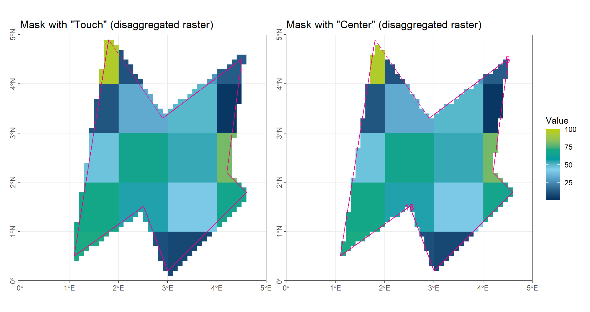

# Load packages
library(terra)
library(tidyterra)
library(tidyverse)
theme_set(theme_bw())
library(patchwork)Values Extract
1 Overview and Data
Spatial data extraction is the process of obtaining meaningful information from spatial datasets based on their geographic position. It is used whenever we want to retrieve values from a raster at specific locations, summarize information inside a polygon, mask a raster by an area, or link attributes between different spatial layers. In general, spatial extraction can be divided into two major groups: raster data extraction and vector data extraction.
Spatial data extraction is especially important when we need to aggregate basic information for specific regions, or when we need to obtain consistent information from different spatial layers for comparison or further analysis.
In this exercis, we will work with the R package terra, which provides efficient tools for handling raster and vector spatial data. For visualization, we will use the tidyterra package, which allows terra objects to be plotted within the familiar ggplot2 framework.
Code
color_RUB_blue <- "#17365c"
color_RUB_green <- "#8dae10"
color_TUD_middleblue <- "#006ab2"
color_TUD_lightblue <- "#009de0"
color_TUD_green <- "#007d3f"
color_TUD_lightgreen <- "#69af22"
color_TUD_orange <- "#ee7f00"
color_TUD_pink <- "#EC008D"
color_TUD_purple <- "#54368a"
color_TUD_redpurple <- "#93107d"
color_SafetyOrange <- "#ff5e00"
color_DRESDEN <- c("#03305D", "#28618C", "#539DC5", "#84D1EE", "#009BA4", "#13A983", "#93C356", "#BCCF02")For the exercises, we will use simple synthetic datasets with random locations and values:
- Two polygons used as extraction masks
- An original raster with 1° spatial resolution
- A set of points
- A set of polygons
rst_Random <- rast("https://raw.githubusercontent.com/HydroSimul/Web/refs/heads/main/data_share/rst_Extract_Random.asc")
names(rst_Random) <- "RandomValues"
vct_Grid <- vect("https://raw.githubusercontent.com/HydroSimul/Web/refs/heads/main/data_share/vct_Extract_Grid.geojson")
vct_Region <- vect("https://raw.githubusercontent.com/HydroSimul/Web/refs/heads/main/data_share/vct_Extract_Region.geojson")
vct_Point <- vect("https://raw.githubusercontent.com/HydroSimul/Web/refs/heads/main/data_share/vct_Extract_Point.geojson")
vct_Voronoi <- vect("https://raw.githubusercontent.com/HydroSimul/Web/refs/heads/main/data_share/vct_Extract_Voronoi.geojson")Code
gp_Raster <- ggplot() +
geom_spatraster(data = rst_Random) +
geom_spatvector(data = vct_Grid, fill = NA, color = "gray86") +
geom_spatvector_text(data = vct_Grid, aes(label = lyr.1), color = "gray86") +
geom_spatvector(data = vct_Region, color = color_TUD_pink, linewidth = .5, fill = NA) +
scale_fill_gradientn("Value",
colors = color_DRESDEN,
limits = c(1, 100)) +
ggtitle("Raster") +
coord_sf(xlim = c(0, 5), ylim = c(0, 5), expand = FALSE) +
theme(axis.title = element_blank(),
axis.text.y = element_text(angle = 90, hjust = .5))
gp_Polygon <- ggplot() +
geom_spatvector(data = vct_Grid, fill = NA, color = "gray86") +
geom_spatvector_text(data = vct_Grid, aes(label = lyr.1), color = "gray86") +
geom_spatvector(data = vct_Region, aes(color = Region, fill = Region), alpha = .5) +
scale_color_manual(values = c(a = color_RUB_green, b = color_RUB_blue)) +
scale_fill_manual(values = c(a = color_RUB_green, b = color_RUB_blue)) +
ggtitle("Regions") +
coord_sf(xlim = c(0, 5), ylim = c(0, 5), expand = FALSE) +
theme(axis.title = element_blank(),
axis.text.y = element_text(angle = 90, hjust = .5))
gp_Point <- ggplot() +
geom_spatvector(data = vct_Point, aes(fill = Values),
shape = 24, size = 4) +
geom_spatvector(data = vct_Region, color = color_TUD_pink, linewidth = .5, fill = NA) +
scale_fill_gradientn("Value",
colors = color_DRESDEN,
na.value = "transparent",
limits = c(1, 100)) +
ggtitle('Point') +
coord_sf(xlim = c(0, 5), ylim = c(0, 5), expand = FALSE) +
theme(axis.title = element_blank(),
axis.text.y = element_text(angle = 90, hjust = .5))
gp_Voronoi <- ggplot() +
geom_spatvector(data = vct_Voronoi, aes(fill = Values)) +
geom_spatvector(data = vct_Region, color = color_TUD_pink, linewidth = .5, fill = NA) +
scale_fill_gradientn("Value",
colors = color_DRESDEN,
na.value = "transparent",
limits = c(1, 100)) +
ggtitle('Polygon') +
coord_sf(xlim = c(0, 5), ylim = c(0, 5), expand = FALSE) +
theme(axis.title = element_blank(),
axis.text.y = element_text(angle = 90, hjust = .5))
# Combine plots
((gp_Polygon + theme(axis.text.x = element_blank())) | (gp_Raster + theme(axis.text.x = element_blank(), axis.text.y = element_blank()))) / (gp_Point | (gp_Voronoi + theme(axis.text.y = element_blank()))) + plot_layout(guides = "collect")
2 Extract from Raster
Raster data can be understood as sampled representations of a continuous geographic surface, where the study area is divided into a regular grid of equally sized cells. Typical raster datasets, such as elevation models, are fundamental in many spatial research fields. Meteorological variables, including temperature and precipitation, are also commonly provided in raster form, as this structure allows spatially distributed values to be represented in a consistent way.
In many applications such as hydrologcial modelling we often need to derive statistical summaries for specific regions, for example regional averages or aggregated indicators.
To perform an EXTRACT operation, two components are required: the raster dataset and the regions of interest (usually provided as vector polygons). Before extraction, it is essential to confirm that both datasets share the same coordinate reference system (CRS). In this exercis, we focus on the concepts and principles behind raster extraction. Four methods will be introduced and discussed.
2.1 Rough with original resolution
The first method uses the raster at its original resolution. However, when the spatial resolution is coarse, the selected grid cells may not accurately represent the region of interest. This is a common issue in meteorological data, where spatial resolution is often relatively low because temporal resolution is prioritized over fine spatial detail.
For the SELECT operation, two common methods are used: Touch and Center-point.
Touch: all grid cells that intersect the region are selected.
Center-point: only grid cells whose center point falls within the region are selected.
Both methods, however, can produce implausible cases:
- Using
Touch, cells with only a small portion inside the region (e.g., Cell 4) are still selected.
- Using
Center-point, a cell with a small fraction inside the region (e.g., Cell 5, one-eighth) is counted as a full cell, while a cell with most of its area inside the region (e.g., Cell 18, three-quarters) may be ignored if its center lies outside.
In summary, using the original raster resolution is reasonable only when the mismatch between grid cells and region boundaries is small.
Touchis suitable for extreme statistics, such as maximum or minimum values, because it includes all intersecting cells.
Center-pointis generally better for calculating averages, as the over-selection and under-selection at the boundaries can balance out, reducing deviation.
# Apply a mask to 'rst_Random' using the second polygon in 'vct_Region'
# 'touches = TRUE' means that cells that **touch the polygon boundary** will also be included
rst_CropTouch <- mask(rst_Random, vct_Region[2], touches = TRUE)
# Calculate the global mean of the masked raster 'rst_CropTouch'
# 'na.rm = TRUE' ensures that NA values are ignored in the calculation
global(rst_CropTouch, fun = mean, na.rm = TRUE) mean
RandomValues 43.21053# Apply a mask to 'rst_Random' using the second polygon in 'vct_Region'
# 'touches = FALSE' means that **only cells fully inside** the polygon are included
rst_CropCenter <- mask(rst_Random, vct_Region[2], touches = FALSE)
# Calculate the global mean of the masked raster 'rst_CropCenter'
# Again, NA values are ignored
global(rst_CropCenter, fun = mean, na.rm = TRUE) mean
RandomValues 47Code
gp_CropTouch <- ggplot() +
geom_spatraster(data = rst_CropTouch) +
geom_spatvector(data = vct_Region[2], color = color_TUD_pink, linewidth = .5, fill = NA) +
scale_fill_gradientn("Value",
colors = color_DRESDEN,
na.value = "transparent",
limits = c(1, 100)) +
ggtitle('Mask with "Touch"') +
coord_sf(xlim = c(0, 5), ylim = c(0, 5), expand = FALSE) +
theme(axis.title = element_blank(),
axis.text.y = element_text(angle = 90, hjust = .5))
gp_CropCenter <- ggplot() +
geom_spatraster(data = rst_CropCenter) +
geom_spatvector(data = vct_Region[2], color = color_TUD_pink, linewidth = .5, fill = NA) +
geom_spatvector_text(data = vct_Grid[c(5, 18)], aes(label = lyr.1), color = color_TUD_pink) +
scale_fill_gradientn("Value",
colors = color_DRESDEN,
na.value = "transparent",
limits = c(1, 100)) +
ggtitle('Mask with "Center"') +
coord_sf(xlim = c(0, 5), ylim = c(0, 5), expand = FALSE) +
theme(axis.title = element_blank(),
axis.text.y = element_text(angle = 90, hjust = .5))
(gp_CropTouch | gp_CropCenter) + plot_layout(guides = "collect")
2.2 Refine Resolution
The second method is straightforward: we increase the raster resolution, for example by making it 10 times finer in each dimension, which results in 100 times more grid cells overall.
Conceptually, this method does not differ from the first method, but it helps to reduce the mismatch between grid cells and the region of interest. This approach is particularly useful when using software that lacks dedicated spatial analysis tools—such as Matlab without the Spatial Analysis Toolbox. By simply refining the raster (e.g., replicating each cell 10 times in both rows and columns), we can achieve a finer resolution without relying on specialized spatial functions.
# Disaggregate the raster 'rst_Random' by a factor of 10
# This increases the resolution, creating smaller cells (finer raster)
rst_Disagg <- disagg(rst_Random, 10)
# Mask the disaggregated raster using the second polygon in 'vct_Region'
# 'touches = TRUE' includes cells that touch the polygon boundary
rst_CropTouch_Disagg <- mask(rst_Disagg, vct_Region[2], touches = TRUE)
# Calculate the global mean of the masked raster
# 'na.rm = TRUE' ensures missing values are ignored
global(rst_CropTouch_Disagg, fun = mean, na.rm = TRUE) mean
RandomValues 47.21555# Mask the disaggregated raster using the second polygon
# 'touches = FALSE' includes only cells completely inside the polygon
rst_CropCenter_Disagg <- mask(rst_Disagg, vct_Region[2], touches = FALSE)
# Calculate the global mean of the masked raster
global(rst_CropCenter_Disagg, fun = mean, na.rm = TRUE) mean
RandomValues 47.76703Code
gp_CropTouch_Disagg <- ggplot() +
geom_spatraster(data = rst_CropTouch_Disagg) +
geom_spatvector(data = vct_Region[2], color = color_TUD_pink, linewidth = .5, fill = NA) +
scale_fill_gradientn("Value",
colors = color_DRESDEN,
na.value = "transparent",
limits = c(1, 100)) +
ggtitle('Mask with "Touch" (disaggregated raster)') +
coord_sf(xlim = c(0, 5), ylim = c(0, 5), expand = FALSE) +
theme(axis.title = element_blank(),
axis.text.y = element_text(angle = 90, hjust = .5))
gp_CropCenter_Disagg <- ggplot() +
geom_spatraster(data = rst_CropCenter_Disagg) +
geom_spatvector(data = vct_Region[2], color = color_TUD_pink, linewidth = .5, fill = NA) +
geom_spatvector_text(data = vct_Grid[c(5, 18)], aes(label = lyr.1), color = color_TUD_pink) +
scale_fill_gradientn("Value",
colors = color_DRESDEN,
na.value = "transparent",
limits = c(1, 100)) +
ggtitle('Mask with "Center" (disaggregated raster)') +
coord_sf(xlim = c(0, 5), ylim = c(0, 5), expand = FALSE) +
theme(axis.title = element_blank(),
axis.text.y = element_text(angle = 90, hjust = .5))
(gp_CropTouch_Disagg | gp_CropCenter_Disagg) + plot_layout(guides = "collect")
As illustrated in the figure, the accuracy is significantly improved, and the deviation is expected to remain below 1%.
2.3 Exact Extraction with Polygons
The weighted mean generally provides more accurate results than a simple numerical average. In spatial analysis, the key aspect of a weighted mean is the choice of weights, which are typically based on the proportion of each grid cell’s area within the region of interest. Therefore, the main task in this method is to calculate the area of each raster value that lies within the target region.
To perform this calculation, it is often necessary to convert raster cells into vector polygons. There are two common approaches:
- Assign all cells with the same value to a single polygon. This method is convenient for categorical data with only a few distinct values.
- Convert each raster cell into an individual rectangle polygon and calculate the proportion of its area that falls within the region. This method is implemented in the
terrapackage in R. However, a small deviation can occur when using longitude-latitude coordinates (CRS), because the actual area of each grid cell is not uniform, leading to minor inaccuracies in the weight calculation.
# Convert the raster 'rst_Random' into polygons
# Each raster cell becomes a polygon
vct_Random <- as.polygons(rst_Random)
# Intersect the raster polygons with the first polygon in 'vct_Region'
# Only the parts of 'vct_Random' that overlap with 'vct_Region[1]' are kept
vct_Random_Poly1 <- terra::intersect(vct_Random, vct_Region[1])
# Intersect the raster polygons with the second polygon in 'vct_Region'
# Only the parts of 'vct_Random' that overlap with 'vct_Region[2]' are kept
vct_Random_Poly2 <- terra::intersect(vct_Random, vct_Region[2])
# Calculate the mean value of the attribute 'RandomValues' in the first intersected polygon
# 'RandomValues' comes from the original raster values when it was converted to polygons
mean(vct_Random_Poly1$RandomValues)[1] 49.77778# Calculate the mean value of the attribute 'RandomValues' in the second intersected polygon
mean(vct_Random_Poly2$RandomValues)[1] 43.21053Code
gp_CropExact_Poly1 <- ggplot() +
geom_spatvector(data = vct_Random_Poly1, aes(fill = RandomValues)) +
geom_spatvector(data = vct_Region[1], color = color_TUD_pink, linewidth = .5, fill = NA) +
scale_fill_gradientn("Value",
colors = color_DRESDEN,
na.value = "transparent",
limits = c(1, 100)) +
ggtitle('Mask with vector-cell') +
coord_sf(xlim = c(0, 5), ylim = c(0, 5), expand = FALSE) +
theme(axis.title = element_blank(),
axis.text.y = element_text(angle = 90, hjust = .5))
gp_CropExact_Poly2 <- ggplot() +
geom_spatvector(data = vct_Random_Poly2, aes(fill = RandomValues)) +
geom_spatvector(data = vct_Region[2], color = color_TUD_pink, linewidth = .5, fill = NA) +
scale_fill_gradientn("Value",
colors = color_DRESDEN,
na.value = "transparent",
limits = c(1, 100)) +
ggtitle('Mask with vector-cell') +
coord_sf(xlim = c(0, 5), ylim = c(0, 5), expand = FALSE) +
theme(axis.title = element_blank(),
axis.text.y = element_text(angle = 90, hjust = .5))
(gp_CropExact_Poly1 | gp_CropExact_Poly2) + plot_layout(guides = "collect")
In the illustration, each raster value has been converted into a single polygon with the same value.
Here’s a polished, academic version of your section in R Markdown style:
2.4 Exact Extraction with Scale Product
This method is designed specifically for meteorological data that span large temporal scales. It is also the most efficient method in practice.
The theory and formulation can be expressed as:
\[ \vec{\Omega}_{[time, region]} = \vec{A}_{[time, grid]} \cdot \vec{W}_{[grid, region]} \]
Where:
- \(\vec{\Omega}_{[time, region]}\) = values for each region over time
- \(\vec{A}_{[time, grid]}\) = matrix of all values for each grid over time [time, grid]
- \(\vec{W}_{[grid, region]}\) = weight matrix representing the contribution of each grid to each region [grid, region]
2.4.1 Weight Matrix
The weights are calculated as the proportion of each grid cell that lies within a region relative to the total area of the region. Note that this considers only the portion of the grid inside the region, not the entire grid.
Example weight matrix (weight_grid):
[R1] [R2]
[G1] 0.000 0.00
[G2] 134364.119 189431.77
[G3] 212464.416 0.00
[G4] 2747.413 0.00
[G5] 150176.618 0.00
[G6] 0.000 45011.22G represents grid cells and R represents regions.
2.4.2 Value Matrix
Example of a value matrix (mat_value):
[G1] [G2] [G3] [G4] [G5] [G6]
[T1] 2 1 3 4 1 1
[T2] 3 1 2 4 1 1 T represents time steps.
By multiplying the value matrix by the weight matrix, we obtain the weighted regional values over time. This approach is particularly effective for large-scale temporal datasets.
3 Extract from Vector Data
Compared to raster data, vector data represent spatial information using various geometric shapes. The three basic (and most common) vector forms are Points, Lines, and Polygons. In all cases, the geometry of these data structures is defined by sets of coordinate pairs (x, y) (terra reference). The geometry specifies the location and topology, while the other important component of vector data is the attributes associated with each shape, where the actual data values are stored.
In hydrology or meteorology, vector data are often in the form of point data (e.g., measurements from stations) or area data (e.g., land use or soil type). Line data, such as isolines, are less commonly used for storing values and are typically used for visualization purposes. Therefore, the EXTRACT operation for vector data usually involves summarizing attribute values for specific regions.
In this lecture, we will focus on POINT and POLYGON vector data.
3.1 Extract from Polygons
When extracting a single attribute value, we can use the function intersect() to find the overlap between the data polygons and the region polygons. After the intersection, statistical summaries (e.g., mean, sum, or count) can be calculated for each region.
# Intersect the Voronoi polygons with the second polygon in 'vct_Region'
# Only the parts of 'vct_Voronoi' that overlap with 'vct_Region[2]' are kept
vct_Voronoi_Poly2 <- terra::intersect(vct_Voronoi, vct_Region[2])
# Calculate the mean value of the attribute 'Values' in the second intersected polygon
mean(vct_Voronoi_Poly2$Values)[1] 42.26673Code
gp_CropVoronoi_Poly2 <- ggplot() +
geom_spatvector(data = vct_Voronoi_Poly2, aes(fill = Values)) +
geom_spatvector(data = vct_Region[2], color = color_TUD_pink, linewidth = .5, fill = NA) +
scale_fill_gradientn("Value",
colors = color_DRESDEN,
na.value = "transparent",
limits = c(1, 100)) +
ggtitle('Mask with polygons') +
coord_sf(xlim = c(0, 5), ylim = c(0, 5), expand = FALSE) +
theme(axis.title = element_blank(),
axis.text.y = element_text(angle = 90, hjust = .5))
(gp_Voronoi | gp_CropVoronoi_Poly2) + plot_layout(guides = "collect")
When we need to extract multiple attributes simultaneously, we can apply the same concept as in the previous section Exact with Scale Product:
\[ \vec{\Omega}_{[attribute, region]} = \vec{A}_{[attribute, polygon]} \cdot \vec{W}_{[polygon, region]} \]
Where:
- \(\vec{\Omega}_{[attribute, region]}\) = values for each region for all attributes
- \(\vec{A}_{[attribute, polygon]}\) = matrix of attribute values for each polygon [attribute, polygon]
- \(\vec{W}_{[polygon, region]}\) = weight matrix representing the contribution of each polygon to each region [polygon, region]
The procedure consists of three main steps:
- Weight-Matrix creation: Use
intersect()to calculate the proportion of each polygon that lies within each region, forming the matrix [polygon, region].
- Value-Matrix creation: Compile the attribute values of all polygons into a matrix [attribute, polygon].
- Scale product: Multiply the Value-Matrix by the Weight-Matrix to obtain the weighted attribute values for each region.
3.2 Extract from Points
3.2.1 Numerical Mean
The simplest and most direct method is to calculate the numerical mean of all points located within a given region:
# Intersect the point vector with the second polygon in 'vct_Region'
# Only points that fall inside 'vct_Region[2]' are kept
vct_Point_Poly2 <- terra::intersect(vct_Point, vct_Region[2])
# Calculate the mean value of the attribute 'Values' in the second intersected polygon
mean(vct_Point_Poly2$Values)[1] 63.80587Code
gp_CropPoint_Poly2 <- ggplot() +
geom_spatvector(data = vct_Point_Poly2, aes(fill = Values),
shape = 24, size = 4) +
geom_spatvector(data = vct_Region[2], color = color_TUD_pink, linewidth = .5, fill = NA) +
scale_fill_gradientn("Value",
colors = color_DRESDEN,
na.value = "transparent",
limits = c(1, 100)) +
ggtitle('Mask with polygons') +
coord_sf(xlim = c(0, 5), ylim = c(0, 5), expand = FALSE) +
theme(axis.title = element_blank(),
axis.text.y = element_text(angle = 90, hjust = .5))
(gp_Point | gp_CropPoint_Poly2) + plot_layout(guides = "collect")
The procedure for calculating the numerical mean consists of two steps:
- Intersect the points with the regions, selecting only those points that fall within each region.
- Calculate the mean value of the selected points for each region.
The limitations of this approach are clear: points located near the boundaries of a region may be ignored, and some regions may contain no points at all.
To overcome these issues, point data can be converted into polygon form (e.g., Thiessen polygons) or raster form (via interpolation), and then analyzed using the extraction methods described earlier. For more details, see Spatial Interpolation.